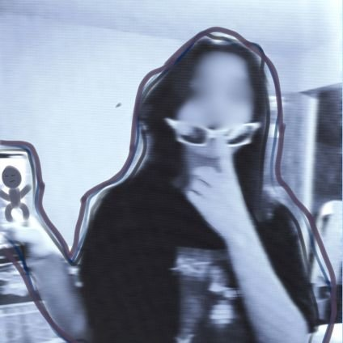

Quem sou eu?
Joyce Moura - joy | ela/dela
:: Brasileira-PI, dezenove anos.
— Técnica em Informática - IFPI.
— Acadêmica em Análise e Desenvolvimento de Sistemas - IFPI, Técnico em Enfermagem - Kaíros.
• Começando em front-and e ui design;
• Iniciação Cientifica em Processamneto de Linguagem Natural.